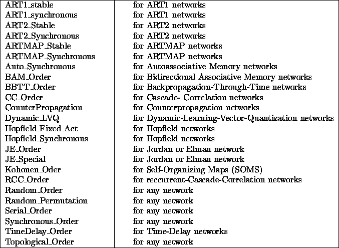
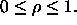
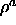
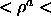
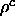
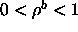

Why is an update mode important? It is necessary to visit the neurons
of a net in a specific sequential order to perform operations on them.
This order depends on the topology of the net and greatly influences
the outcome of a propagation cycle. For each net
with its own characteristics, it is very important to choose the update
function associated with the net in order to get the desired behavior
of the neural network. If a wrong update function is given, SNNS will display
a error message on your screen. Click  in the control panel
to select an update function.
in the control panel
to select an update function.
The following update functions are available for the various network types:

All these functions receive their input from the five update parameter fields
in the control panel. See figure 
The following parameters are required for ART, Hopfield, and Autoassociative networks. The description of the update functions will indicate which parameter is needed.
= vigilance parameter with (

) : field1

= initial vigilance parameter for the ARTpart of the net
with (0

1) : field1
= vigilance parameter for ART
with (
) : field2

= Inter-ART-Reset control with (
) : field3a = strength of the influence of the lower level in F1 by the middle
level with (a > 0) : field2
b = strength of the influence of the middle level in F1 by the upper
level with (b > 0) : field3
c = part of the length of vector p with (0 < c < 1) : field4
= Kind of threshold with (
) : field5
c = number of units : field1
n = iteration parameter : field1
x = number of selected neurons
Field1..Field5 are the positions in the control panel. For a more
detailed description of ART-parameters see section  : ART Models in SNNS
: ART Models in SNNS
Now here is a description of the steps the various update functions perform, and of the way in which they differ.